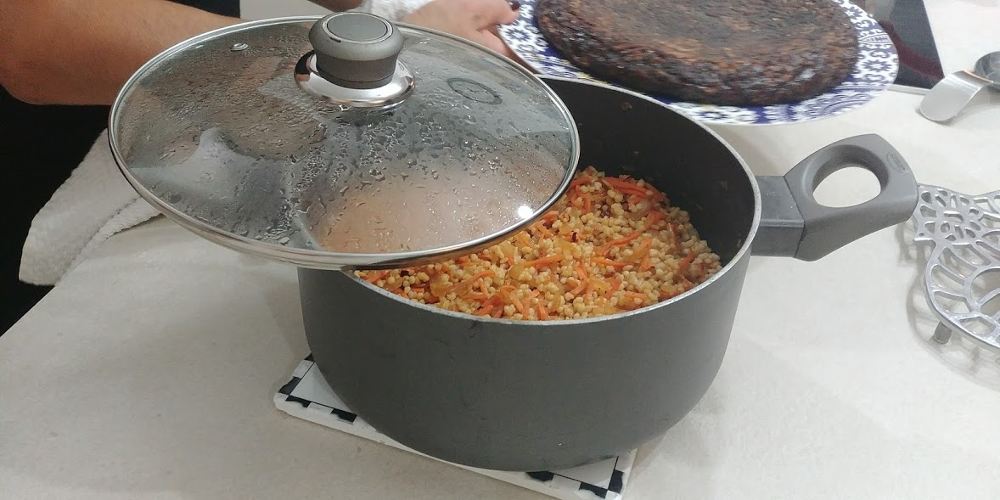

<div class="general-wraper">
    <!--- side bar --->
    <aside class="wrapper">
        <div id="sidebar-wrapper">
        <ul class="sidebar-nav">
            <li class="sidebar-brand">
                <a href="#"></a>
            </li>
            <li>
                <a href="#">About</a>
            </li>
            <li>
                <a href="#">Services</a>
            </li>
            <li>
                <a href="#">Contact</a>
            </li>
        </ul>
      </div>
    </aside>

    <main dir="rtl">
        <div class="recepie-container">
          <div class="rel-container">
            <div class="img-cont">
                
            </div>
            <div class="header-cont">
                <h2 class="rec-name">פתיתים</h2>
            </div>
            <h4> חומרים</h4>
            <div class="ingredients-description">
              <ul>
                <div class="col 1">
                  <li>גזר</li>
                  <li>בצל</li>
                </div>
                <div class="col 2">
                  <li>חבילת פתיתים</li>
                  <li>מים</li>
                </div>
                <div class="col 3">
                  <li>חבילת פתיתים</li>
                  <li>מים</li>
                </div>
                <div class="col 4">
                  <li>פפריקה</li>
                  <li>מלח</li>
                </div>
                <div class="col 5">
                  <li>פלפל</li>
                  <li>שמן</li>
                </div>
              </ul>
            </div>
            <div class="steps">
                <h4>אופן ההכנה</h4>
                <span>
                    <ol>
                      <li>בלה בלה בלה</li>
                      <li>בלה בלה בלה</li>
                      <li>בלה בלה בלה</li>
                      <li>בלה בלה בלה</li>
                      <li>בלה בלה בלה</li>
                    </ol>
                </span>
            </div>
            <span class="properties"></span>
            <div class="caption">
                  <span class="level" dir="rtl">בינוני </span> <span class="duration" dir="rtl">1-שעה </span> <span class="type" dir="rtl">מנה עיקרית</span>
            </div>
          </div>
        </div>

    </main>
</div>
